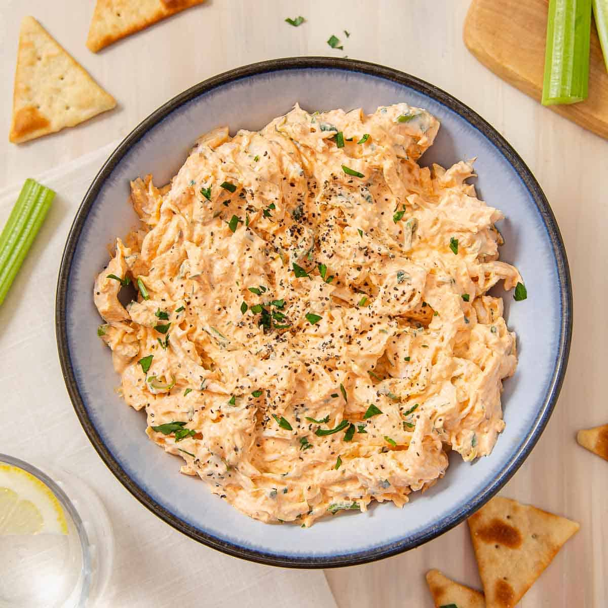

Game Day Buffalo Chicken Dip

Someone with more patience and creativity than me would actually write a description here. This is just an excercise.
Insert another quote/unquote paragraph of a description of a mouthwatering Buffalo Chicken Dip, courtest of Western New York.
INGREDIENTS
- 1.5 lbs of raw chicken, cut doesn't matter as long as it shreds!
- 2x 8oz blocks of cream cheese
- A fuck ton of hot sauce (Frank's is tradition!)
- Seasonings to taste, add some depth not just spice!
- Cut the chicken into larger chunks.
- Brown it all the way around the outside
- Dump in almost all the hot sauce, all the cream cheese, and a little butter
- Pressure cook that mf on high for about 45 minutes.
- I'm sure there was more, but really who cares? It's dip ya moron just make it.
- Be better than me, top it with chives and don't throw half of it our 3.5 weeks later.
HOME